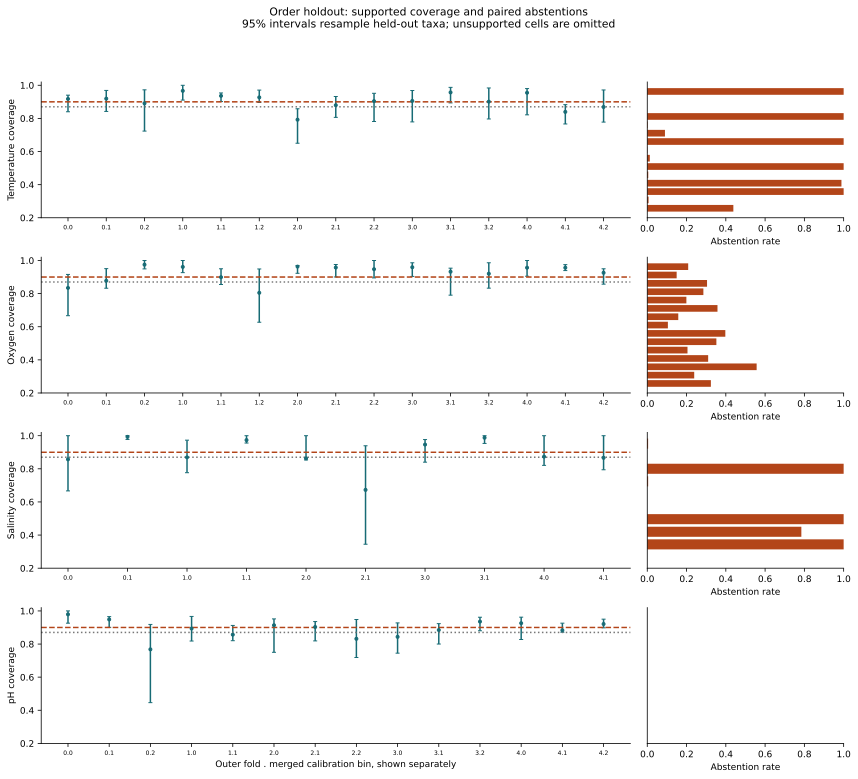
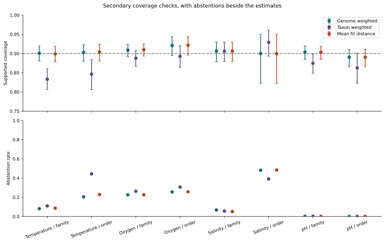
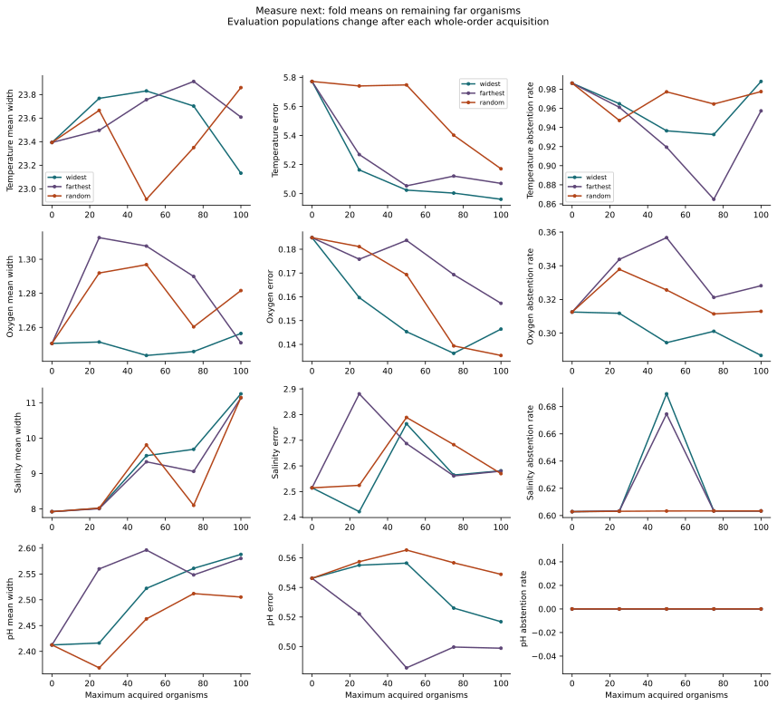

Microbial growth / empirical benchmark
How far can a growth prediction be trusted?
Follow prediction error, coverage and abstention as genomes move away from labelled relatives.
Research prototype on this labelled GTDB-mapped table; not tested on prospective cultures, on organisms outside the table, or for clinical or production use.
The locked result
The calibration and accuracy targets failed.
B1 has lower order-holdout error for temperature and salinity. The order-holdout accuracy target failed. The full results retain failures, unsupported bins and uncertainty intervals.
Target 1 failed on two of its three parts. The pooled 95% coverage interval reached 90% in all eight trait and rank cells (point estimates 89.04% to 92.10%). Two supported bins had intervals wholly below 87% (temperature/order fold 2 bin 0; salinity/family fold 3 bin 2). The naive far-bin condition held in 1 of 8 cells, temperature/order, for both B1 and B2. So in 7 of 8 cells this benchmark does not show that naive intervals under-cover in the far bin, or that distance conditioning is needed there. Elsewhere at least one naive comparator covered more than 80%, or had an upper limit of 90% or more, in the far bin. data/gtdb-derived/results/public-results.tsv:L602; data/gtdb-derived/results/public-results.tsv:L618
Target 3 (publication): pending external publication; horizon estimates for every trait are complete in the package. data/gtdb-derived/results/public-results.tsv:L604
Target 4 is a reporting duty whose B1 win list is computed from the order-rank records. B1 has lower point error than the proposed predictor for order-holdout temperature and salinity; neither paired interval excludes zero. data/gtdb-derived/results/public-results.tsv:L605; data/gtdb-derived/results/public-results.tsv:L76; data/gtdb-derived/results/public-results.tsv:L376 B1 also has lower point error for temperature at genus, phylum and the random split, salinity at family, class and phylum, and pH at phylum; none of those paired intervals excludes zero. Salinity at genus is identical. data/gtdb-derived/results/public-results.tsv:L26; data/gtdb-derived/results/public-results.tsv:L126; data/gtdb-derived/results/public-results.tsv:L151; data/gtdb-derived/results/public-results.tsv:L351; data/gtdb-derived/results/public-results.tsv:L401; data/gtdb-derived/results/public-results.tsv:L426; data/gtdb-derived/results/public-results.tsv:L576; data/gtdb-derived/results/public-results.tsv:L326
B0 is the training-side mean or majority class; B1 retrains GenomeSPOT v1.0.0's published specification on these folds (iteration cap raised, upstream balancing not used; docs/baselines.md); B2 copies the nearest labelled relative; the proposed predictor chooses between B1 and a regularised alternative by inner tuning.
| Trait | B1 error [95% interval] | Proposed error [95% interval] | Paired reduction [95% interval] | Source |
|---|---|---|---|---|
| Temperature | 4.4857 [4.0306, 4.9648] | 4.4886 [4.0228, 4.9747] | -0.0029 [-0.0251, 0.0177] | TSV line 56 / TSV line 69 / TSV line 76 |
| Oxygen | 0.1415 [0.0904, 0.2003] | 0.1307 [0.0794, 0.1936] | 0.0108 [-0.0054, 0.0283] | TSV line 206 / TSV line 219 / TSV line 226 |
| Salinity | 1.6909 [1.3177, 2.2457] | 1.7306 [1.3117, 2.4045] | -0.0397 [-0.1677, 0.0247] | TSV line 356 / TSV line 369 / TSV line 376 |
| pH | 0.5250 [0.4789, 0.5832] | 0.5093 [0.4697, 0.5570] | 0.0157 [0.0006, 0.0407] | TSV line 506 / TSV line 519 / TSV line 526 |
Outside the target, 2 of the 20 other trait and rank cells meet the 10% bar with an interval excluding zero: oxygen at phylum and oxygen on the random split, the optimistic reference. These 20 comparisons are not adjusted for multiplicity and are descriptive only.
The relative reductions are 12.9% for oxygen at phylum and 14.4% for oxygen on the random split. data/gtdb-derived/results/public-results.tsv:L276; data/gtdb-derived/results/public-results.tsv:L301
Coverage with abstentions
Supported abstentions count as covered exactly when the computed interval or set contains the true label. Unsupported items are excluded from coverage and reported as abstentions.
Accepted-item coverage has no nominal guarantee. Accepted items exclude abstentions and unsupported rows.
| Trait / rank | Pooled coverage [95% interval] | Accepted coverage [95% interval] | Abstention | Mean width or cardinality | Accepted mean width or cardinality | Source |
|---|---|---|---|---|---|---|
| Temperature / family | 90.07% [88.05%, 91.94%] | 89.99% [88.01%, 91.86%] | 8.06% | 17.8647 | 17.5959 | TSV line 44 |
| Temperature / order | 90.29% [87.99%, 92.25%] | 90.17% [87.61%, 92.38%] | 20.38% | 18.7015 | 17.5541 | TSV line 69 |
| Oxygen / family | 90.89% [89.20%, 92.39%] | 95.41% [93.45%, 97.02%] | 22.53% | 1.1141 | 1.0000 | TSV line 194 |
| Oxygen / order | 92.10% [89.46%, 94.37%] | 94.61% [91.64%, 97.16%] | 25.56% | 1.1779 | 1.0000 | TSV line 219 |
| Salinity / family | 90.63% [87.84%, 92.97%] | 90.32% [87.56%, 92.69%] | 6.69% | 6.8323 | 6.7127 | TSV line 344 |
| Salinity / order | 89.99% [82.28%, 94.97%] | 83.32% [71.31%, 91.84%] | 48.15% | 7.7806 | 6.7489 | TSV line 369 |
| pH / family | 90.35% [88.49%, 91.97%] | 90.37% [88.36%, 91.87%] | 0.06% | 2.2096 | 2.2090 | TSV line 494 |
| pH / order | 89.04% [86.64%, 91.07%] | 89.04% [86.64%, 91.07%] | 0.00% | 2.1944 | 2.1944 | TSV line 519 |

Beyond the average
Order-holdout horizons
This table is the order rank only. Per-rank records are the JSON files under data/gtdb-derived/results/. At class, temperature already fails in the nearest bin for both predictors. At class, pH also fails in bin 0 for both predictors, and salinity is unidentified for both predictors. At phylum, the horizons are unidentified. The B1 ordinal interval is shown beside the proposed interval because the two intervals are not the same for every trait. The horizon first fails against a training-side constant or when most predictions abstain. A right-censored estimate extends beyond the observed range. These discrete bootstrap summaries do not certify a universal distance threshold.
| Trait | Proposed horizon | B1 horizon | Proposed ordinal interval | B1 ordinal interval | Source |
|---|---|---|---|---|---|
| Temperature | Bin 1 (0.3736 to 0.4558) | Bin 1 (0.3736 to 0.4558) | [1, 4] | [1, 4] | TSV line 75 / TSV line 74 |
| Oxygen | Beyond observed range | Beyond observed range | [5, 5] | [0, 5] | TSV line 225 / TSV line 224 |
| Salinity | Bin 2 (0.4492 to 0.5172) | Bin 2 (0.4492 to 0.5172) | [1, 3] | [1, 5] | TSV line 375 / TSV line 374 |
| pH | Bin 2 (0.4577 to 0.5206) | Bin 1 (0.3674 to 0.4577) | [2, 5] | [1, 5] | TSV line 525 / TSV line 524 |

What to measure next
Exploratory retrospective selection on the same pipeline.
Widest uncertainty, farthest-first distance and random selection acquire whole orders, then refit and recalibrate. Lower error and mean width or cardinality areas under the budget curve are preferable. Remaining evaluation populations change by strategy, so this is exploratory evidence.
| Trait / strategy | Mean error AUC | Mean width or cardinality AUC | Source |
|---|---|---|---|
| Temperature / widest | 5.1394 | 23.6409 | TSV line 606 |
| Temperature / farthest | 5.2161 | 23.6662 | TSV line 607 |
| Temperature / random | 5.5904 | 23.3881 | TSV line 608 |
| Oxygen / widest | 0.1517 | 1.2486 | TSV line 609 |
| Oxygen / farthest | 0.1750 | 1.2903 | TSV line 610 |
| Oxygen / random | 0.1625 | 1.2788 | TSV line 611 |
| Salinity / widest | 2.5746 | 9.1991 | TSV line 612 |
| Salinity / farthest | 2.6690 | 8.9830 | TSV line 613 |
| Salinity / random | 2.6345 | 8.8672 | TSV line 614 |
| pH / widest | 0.5423 | 2.4999 | TSV line 615 |
| pH / farthest | 0.5075 | 2.5501 | TSV line 616 |
| pH / random | 0.5567 | 2.4505 | TSV line 617 |
Random selection has the lowest mean width AUC for temperature, salinity and pH. Widest-first has the lowest mean set-cardinality AUC only for oxygen. data/gtdb-derived/results/public-results.tsv:L606; data/gtdb-derived/results/public-results.tsv:L607; data/gtdb-derived/results/public-results.tsv:L608; data/gtdb-derived/results/public-results.tsv:L609; data/gtdb-derived/results/public-results.tsv:L610; data/gtdb-derived/results/public-results.tsv:L611; data/gtdb-derived/results/public-results.tsv:L612; data/gtdb-derived/results/public-results.tsv:L613; data/gtdb-derived/results/public-results.tsv:L614; data/gtdb-derived/results/public-results.tsv:L615; data/gtdb-derived/results/public-results.tsv:L616; data/gtdb-derived/results/public-results.tsv:L617

What this evidence supports
The training-mean baseline B0 has the lowest point error for temperature at phylum and for pH at class and phylum, limiting the value of genome-based predictions at these ranks. data/gtdb-derived/results/public-results.tsv:L102; data/gtdb-derived/results/public-results.tsv:L106; data/gtdb-derived/results/public-results.tsv:L111; data/gtdb-derived/results/public-results.tsv:L115; data/gtdb-derived/results/public-results.tsv:L119; data/gtdb-derived/results/public-results.tsv:L527; data/gtdb-derived/results/public-results.tsv:L531; data/gtdb-derived/results/public-results.tsv:L536; data/gtdb-derived/results/public-results.tsv:L540; data/gtdb-derived/results/public-results.tsv:L544; data/gtdb-derived/results/public-results.tsv:L552; data/gtdb-derived/results/public-results.tsv:L556; data/gtdb-derived/results/public-results.tsv:L561; data/gtdb-derived/results/public-results.tsv:L565; data/gtdb-derived/results/public-results.tsv:L569
In our literature check of 2026-10-11, we did not find a report of calibrated prediction intervals for genome-based prediction of microbial growth conditions that gives coverage separately for bins of phylogenetic distance to the training set, under whole-family or whole-order hold-out. The closest work we found reports interval coverage across phylogenetic-distance cutoffs for a different microbial trait, 16S rRNA gene copy number (Gao and Wu, 2023), and false discovery control within sequence-identity groups for enzyme function prediction (Ding, Luo and Luo, 2024). This is a bounded search finding, not a claim that no such work exists.
Oxygen is a class label with uncertainty represented by a prediction set.
Exchangeability is assumed, not established. Labels are table-level experimental records with residual per-value provenance uncertainty. Correlated genomes, unequal taxon size, unsupported ranks and annotation changes limit generalisation. Accepted-item coverage has no nominal guarantee.
Read the technical note (PDF), Markdown note, complete results, pre-registration and data terms and attribution.
Reproducible by design
Check the committed aggregates, or recompute them.
Offline verification compares pinned hashes and runs the fixture tests. It does not download or refit.
uv run --project release --frozen python -m scripts.check_release
uv run --frozen pytest --basetemp=work-tmp.noindex/pytest-fixturesFull recomputation acquires missing inputs, rebuilds local fitted trees, scores outer folds and regenerates the public package. It needs a network connection or a checksum-verified raw cache, and it stops if free space on / is below 25 GB. The pinned replay inputs total 254,404,224 bytes. data/raw and the local fitted trees are not redistributed.
uv run --project release --frozen python -m scripts.releasePhase 1 rebuild without outer scoring is uv run --frozen python -m scripts.rebuild. Every empirical number links to a source-table line, and the release manifest pins output hashes. Code is Apache-2.0; aggregate GTDB-derived analyses are CC BY-SA 4.0.